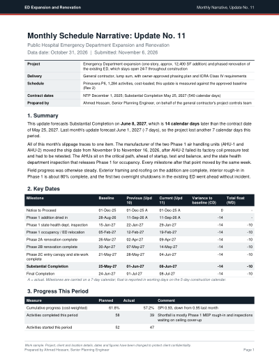
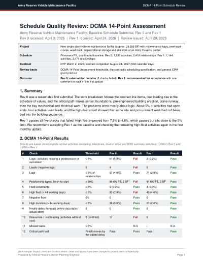
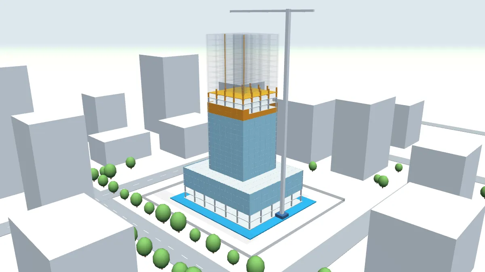

Baseline schedules
IPS / NAS / BPS from drawings, specifications, SOV, milestones, calendars and procurement.
DELIVERED / XER / MPP · narrative · critical-path layouts

Construction schedules that hold up on site and under review. Primavera P6 and MS Project baselines, monthly updates, DCMA reviews, time impact analysis and 4D sequencing for contractors and project teams.
REMOTE & HYBRID / U.S. PROJECT EXPERIENCE / NDA READYSix services, each described by the deliverable your project team receives.
IPS / NAS / BPS from drawings, specifications, SOV, milestones, calendars and procurement.
Weekly or monthly actuals, forecast changes, critical path, float, lookaheads and progress reporting.
Documented fragnets and pre/post schedule comparisons tied to RFIs, field events and the affected work.
Independent reviews, DCMA 14-point screens, activity-ID exceptions and reviewer comment resolution.
SOV/CLIN cost loading, labor forecasts, crew plans, manpower histograms and cash-flow curves.
MS Project / Primavera conversion, activity-code mapping, Power BI and interactive HTML views.
Select a sector to see the typical scheduling problems, deliverables and interfaces addressed in the work.
Every date should have a basis. These are the six stages I follow on every baseline.
Scheduling specifications, milestones, review periods, calendars, weather rules and resource requirements.
WBS by phase, building, floor, area, system, trade or bid item—aligned with how work is released.
Submittal, review, approval, fabrication and delivery chains for long-lead equipment and materials.
Defensible predecessors and successors, explicit waiting activities and realistic field sequencing.
Cost, labor and crew assignments where required; progress curves tied to the correct schedule basis.
Logic checks, longest-path review, baseline narrative, report layouts and comment response register.
Time impact analysis uses schedule logic and contemporaneous documentation—not simply a list of delayed activities.
Use the accepted schedule update immediately preceding the event where available.
Trace RFI, notice, directive, engineering and daily-report dates to the affected workfront.
Create the event activities and tie them only to the work they genuinely affect.
Maintain a common data date and calculate pre- and post-impact schedule forecasts.
Describe milestone movements, controlling sequence, concurrency and unresolved documentation.
Pre- and post-impact reports, milestone comparison and the reservations necessary for a fair technical conclusion.
View TIA reports ↗Reports in the format I issue on live projects: monthly narratives, time impact analysis, DCMA 14-point reviews and update comparisons.

Forecast against contract, critical path, lookahead, risks and recovery options.
Open the narrative ↗
Differing site condition, fragnet, impacted vs unimpacted runs and a concurrency check.
Open the TIA ↗
Rev 0 and Rev 1 results side by side, findings and the fix for each.
Open the review ↗
RESIDENTIAL TOWER / DATA DATE 27 MAR 2026Twenty-one 4D models, three for each sector, each linked to its own CPM baseline. Move the data date and the project builds itself, with the critical path shown in red.
Three steps from your first message to the first deliverable.
Project type, current stage, the milestone that matters and the issue you need solved. The contract scheduling specification helps if you have it.
We confirm what I review, which files I need (XER, MPP, narrative, progress records) and the NDA, before any restricted file is shared.
A written list of deliverables, format and timing. Work starts once you accept it.
Fees and timing depend on project size, the quality of the existing files and how urgent the work is, so they are quoted for each assignment rather than listed here.
Send the project specification, your current programme, or a short description of the scheduling issue. A focused scope review is the first step.
Tell me what you need. This form opens an email draft; no documents are transferred through the website.